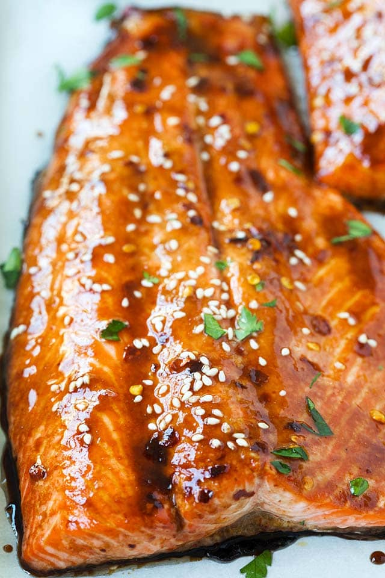

Salmon

Description
An Asian inspired marinade for baked salmon.
Ingredients
- 3 Garlic cloves
- 1 lb Salmon
- 1 tsp Red chili flakes
- 1 tbsp Grated ginger
- 2 tbsp Olive oil
- 3 tbspSoy sauce
- 1 tspSesame oil
- 1 tbsp Brown sugar
- 1/2 lemon juice
Steps
- Mix all the ingredients except the salmon together and pour into a ziplock bag
- Place the salmon into the ziplock bag
- Massage the marinade into the salmon until fully coated and rest in the fridge for 30 mins
- Flip over and rest for another 30 mins
- Bake in the oven at 350 for 10-15 mins